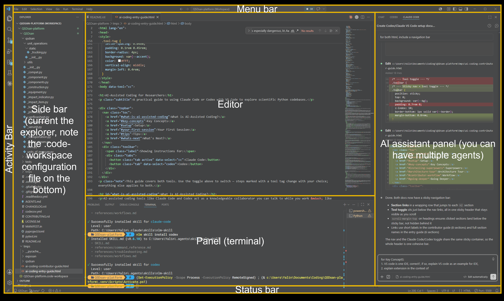

A practical guide to using Claude Code or Codex with VS Code for everyday research coding.
This guide covers both tools. Use the toggle above to switch — steps marked with a tool tag change with your choice; everything else applies to both.
AI-assisted coding tools like Claude Code and Codex act as a knowledgeable collaborator you can talk to while you work — like having an expert sitting beside you who can read any file in your project and answer questions about it. You can ask it to explain an unfamiliar file, trace how data flows through a function, or help you understand why code is written the way it is. The AI reads the code alongside you — it does not run it or guarantee correctness, but it can save hours of digging through documentation.
You may have heard the term vibe coding — letting an AI write code from a plain-language description and running it without really reading or understanding what it produced. It can be a fast way to throw together a prototype, but it is risky: the AI may generate code that looks right and runs without errors yet does the wrong thing. In research that is especially problematic, because a wrong number often looks just as plausible as a correct one. This guide focuses on a more careful way of using AI — to understand code and to support your own judgment, reviewing what it produces rather than accepting it blindly.
⚠ AI makes mistakes — your review is essential.
AI tools can give confident, fluent answers that are simply wrong: a misremembered function, an outdated API, a subtle logic error. Always check what the AI tells you against the actual code and documentation, and never run, trust, or publish AI-generated code without reading and testing it yourself. The AI is a collaborator, not an authority — you remain responsible for the result.
Claude Code and Codex can both run inside VS Code as extensions. Codex also has a terminal-based CLI, but this beginner guide uses the VS Code extension path so you do not need to install Node.js just to get started. The explanations and example prompts are the same either way.
If these terms are already familiar, skip ahead to Setup.
| Term | What it means |
|---|---|
| Workspace / Directory | The folder you open with the tool. Everything the AI knows about your project comes from this folder. |
| Codebase | All the source code files in a project, taken together. |
| IDE | Integrated Development Environment — a single application that bundles the tools for writing code: a file browser, text editor, terminal, and more. VS Code (below) is the IDE used in this guide. |
| VS Code | A free, widely-used IDE from Microsoft (full name: Visual Studio Code). On its own it is a lightweight code editor; it gains full IDE features — language support, debugging, AI assistants — through extensions. This guide uses it to browse files, run a terminal, and host Claude Code or Codex. Download at code.visualstudio.com; full documentation here. |
| Terminal | A text-based window for running commands. VS Code has one built in: go to View → Terminal. |
| Extension | An add-on that gives VS Code new features — language support, themes, tools, or AI assistants like Claude Code. You browse and install extensions from VS Code's built-in Extensions Marketplace. See the official Extension Marketplace guide. |
| Prompt | A message you type to the AI. The quality of your question shapes the quality of the answer. |
| Scientific Python library | A collection of reusable Python code for scientific work. This guide uses NumPy (numerical computing) for practice; other widely-used examples include SciPy (scientific algorithms), pandas (data tables and analysis), Matplotlib (plotting and visualization), and PyTorch (machine learning). |
A quick map of the names you'll come across — the companies, their AI assistants, the coding tools, and the models that power them.
| Term | What it means |
|---|---|
| Anthropic & OpenAI | The two AI companies whose tools this guide covers. Anthropic builds Claude; OpenAI builds ChatGPT. Each also makes a coding tool (below). |
| Claude & ChatGPT | The companies' general-purpose AI assistants — the chat products you may already have used in a web browser. Claude is Anthropic's; ChatGPT is OpenAI's. |
| Claude Code & Codex | The AI coding tools this guide uses. Claude Code (from Anthropic, powered by Claude) runs inside VS Code; Codex (from OpenAI, powered by its models) is available as a VS Code extension, CLI, web app, and cloud coding agent. This guide uses the VS Code extension path. Unlike the chat products, these can read the files in your project directly. |
| Model | The underlying AI that does the thinking. Models come in tiers that trade speed against capability: Anthropic's Claude has Haiku (fastest, lightest), Sonnet (balanced), and Opus (most capable); OpenAI offers a similar range. Heavier models handle hard problems better but cost more and respond slower — the tool often lets you choose which to use. |
| Context window | How much text the AI can hold in mind at once — your files, the conversation so far, and its instructions. It is large but limited; in a very long session the earliest parts can drop out of view, so starting a fresh conversation for each new task keeps the AI focused. |
| Tokens (input & output) | The unit AI text is measured in — roughly three-quarters of a word. Input tokens are what you send the AI (your prompt, files, and the conversation so far); output tokens are what it writes back. Both fill the context window, and with API billing they are charged separately, with output usually costing more. A long conversation costs more because its whole history is re-sent as input each turn. |
| Knowledge cutoff | Each model is trained on data up to a fixed date and knows nothing after it. It may be unaware of a recent library release or a renamed function — a common source of confident but outdated answers. When in doubt, check against current documentation. |
| Agent / agentic | An agentic tool does more than answer questions — it takes actions on your behalf across several steps: reading and editing files, running commands, searching the project. Claude Code and Codex are both agentic, which is why they can carry out a task rather than only describe it. |
| Skill | A reusable instruction set that tells the AI how to approach a particular kind of task — planning, code review, debugging. Claude Code commonly triggers skills with slash commands, such as /brainstorming; Codex can invoke skills explicitly with /skills or $skill-name, and can also choose relevant skills automatically. Skills are optional and aimed at software-development work rather than the data tasks in this guide. |
| MCP | MCP (Model Context Protocol) is an open standard that lets your AI assistant connect to outside services — note-taking apps, document stores, web tools, and more. Each connection is called an MCP server. See MCP in practice: NotebookLM below for a hands-on example. |
| Hallucination | When an AI states something false with full confidence — a function that does not exist, a misremembered API, an invented citation. Hallucinations look just like correct answers, which is why you must verify the AI's output rather than trust it (see the warning above). |
| Subscription vs. API access | Two ways to pay for the same models. A subscription (Claude Pro/Max, ChatGPT Plus/Pro/Business/Edu/Enterprise) is a flat monthly fee with a capped usage allowance — predictable, and simplest for individuals. API access is pay-as-you-go billing through the company's developer platform: charged per token, with no flat fee and no hard cap — flexible for heavy or automated use, but the cost varies. Access rules and free trials change over time, so check the current pricing page before a workshop. |
| Usage / rate limits | Even paid subscriptions cap how much you can use within a rolling time window. If you reach the limit, you wait until it resets or upgrade to a higher plan. Heavier models and long conversations use up the allowance faster. |
When you open VS Code, the window is divided into a few main areas — it helps to recognize them before you start. The screenshot below shows them; the table that follows explains each one. For a fuller description, see the official VS Code User Interface guide.

| Area | Where it is & what it does |
|---|---|
| Menu Bar | The menus at the top of the window (File, Edit, View, Terminal, Help, and more). Many instructions in this guide use it — for example File → Open Folder or View → Terminal. On macOS it appears in the system menu bar at the top of the screen. |
| Activity Bar | The narrow strip on the far left. Its icons switch between views — Explorer (files), Search, Source Control, Run and Debug, and Extensions. |
| Side Bar | Opens next to the Activity Bar. Most often it shows the Explorer — the file tree of your workspace. |
| Editor | The large central area where you read and edit files. You can open several files at once as tabs. |
| Panel | The area below the editor. It holds the integrated Terminal, along with Problems and Output. Open it with View → Terminal. |
| Status Bar | The strip along the very bottom. Shows information about the current file and project, such as the Python version, error count, and git branch. |
| AI Assistant Panel | Not part of base VS Code — added by an AI extension such as Claude Code or Codex. This is the chat window where you talk to the AI, usually docked beside the editor. |
Before you begin Claude Code
Using Claude Code is not free — it requires a paid Claude plan (Pro or Max) or Anthropic API billing. A free account on its own will not work. Set this up at claude.ai before your workshop session; account creation also requires email verification.
Download from code.visualstudio.com and run the installer. Accept all defaults — on Windows, leave all checkboxes checked, as they add useful shortcuts.
Ctrl+Shift+X (Windows/Linux) or Cmd+Shift+X (Mac).After installation, press Ctrl+L (Windows/Linux) or Cmd+L (Mac) to open the Claude Code panel. You will be prompted to sign in with your Anthropic account. Once signed in, the Claude Code chat panel will appear with a text input — you are ready to use it.
Go to File → Open Folder and select the folder you want to explore. This becomes your workspace — the AI can see all files inside it.
For more detail and troubleshooting, see the official Claude Code documentation from Anthropic.
Before you begin Codex
Codex access is included with eligible ChatGPT plans (such as Plus, Pro, Business, Edu, and Enterprise) or can be used with an OpenAI API key. Free or trial access may change over time, so confirm your access before your workshop session.
Download from code.visualstudio.com and run the installer. Accept all defaults — on Windows, leave all checkboxes checked, as they add useful shortcuts.
Ctrl+Shift+X (Windows/Linux) or Cmd+Shift+X (Mac).Open Codex from the VS Code sidebar. The first time, it will prompt you to sign in with your ChatGPT account or an API key. Once signed in, the Codex chat panel will appear — you are ready to use it.
Go to File → Open Folder and select the folder you want to explore. This becomes your workspace — the AI can see files inside it when you include them in the conversation or ask it to inspect the project.
Node.js is only needed if you prefer the Codex CLI instead of the VS Code extension. For the CLI route, install Node.js LTS, run npm i -g @openai/codex, then launch codex from inside your project folder.
For more detail and troubleshooting, see the official Codex documentation from OpenAI.
In this session you'll use your AI assistant to do a small but real piece of data work — loading, cleaning, and visualizing a dataset with scientific Python libraries. This is the everyday way researchers use these tools: you describe what you want, the AI helps you write the code, and you check that it does the right thing. You don't have to write the code from scratch — but you do need to read and understand what the AI produces.
penguins-practice) and open it in VS Code: File → Open Folder. This folder is your workspace.Claude Code Press Ctrl+L (Windows/Linux) or Cmd+L (Mac) to open the Claude Code chat panel.
Codex Open Codex from the VS Code sidebar. If you do not see it, restart VS Code after installing the extension.
This exercise runs on Python and a few scientific libraries. Rather than installing them by hand, let the assistant do it — setting up an environment is itself a normal, useful piece of AI-assisted work, and a good first thing to try. Give it this prompt:
Follow along as it works: it will run commands in the terminal, and may ask you to confirm a step or to close and reopen the terminal so a fresh install is picked up. Read what it is doing rather than just clicking through — this is exactly the "understand what the AI does" habit this guide is about.
Fallback: the Anaconda distribution
If the install runs into trouble — or you would rather get everything in one download — install Anaconda (or the lighter Miniconda). It bundles Python together with pandas, seaborn, and matplotlib, so the practice session works without a separate install step. Let your assistant know you are using Anaconda so it uses the matchingcondacommands.
The Palmer Penguins dataset records body measurements — bill length, flipper length, body mass, and more — for three penguin species. A few rows have missing values, which makes it a realistic example for practicing data cleaning. It loads in one line through the seaborn library.
Create a new file named penguins.py in your practice folder (or a Jupyter notebook, if you prefer) — you'll build it up as you go. Work through these prompts with your assistant one at a time. After each one, read the code it gives you, paste it into penguins.py, run it, and check the result before moving on. If a line is unclear, ask the assistant to explain it.
Once the basics work, ask for more: a histogram of body mass by species, a table of average measurements per species, or a different chart type. Each time, ask the AI why it chose a particular approach — that is how you learn to use the libraries yourself, rather than just collecting answers.
Try the prompts yourself first — working through them with the AI is the point of the exercise. If you get stuck, or just want to compare, you can reveal one possible solution below. Your assistant's code may look different and still be correct; whatever you end up with, make sure you can read and explain every line.
import seaborn as sns
import matplotlib.pyplot as plt
# 1. Load the dataset and take a first look
penguins = sns.load_dataset("penguins")
print(penguins.head())
print(penguins.columns.tolist())
# 2. Check for missing values
print(penguins.isna().sum()) # missing values per column
print("Rows with any missing value:",
penguins.isna().any(axis=1).sum())
# 3. Handle the missing values
# dropna() removes rows that have gaps.
# fillna() would instead fill them in (e.g. with a column average).
# Dropping is simplest here; filling keeps more rows but invents values.
penguins_clean = penguins.dropna()
# 4 & 5. Scatter plot of bill dimensions, colored by species, with labels
sns.scatterplot(
data=penguins_clean,
x="bill_length_mm",
y="bill_depth_mm",
hue="species",
)
plt.xlabel("Bill length (mm)")
plt.ylabel("Bill depth (mm)")
plt.title("Penguin bill dimensions by species")
plt.legend(title="Species")
plt.show()
The prompts in the left column are natural starting points — the versions on the right are more specific and tend to get better answers:
| Instead of... | Try... |
|---|---|
| "Explain this code" | "Explain what this dropna() line does, and how it changes my dataset." |
| "Make a plot" | "Make a scatter plot of bill length vs bill depth, colored by species, with labelled axes and a title." |
| "I don't understand" | "I'm a chemical engineer. Can you explain what a DataFrame is using an analogy to a spreadsheet?" |
| "Is this right?" | "What assumptions does this cleaning step make about my data, and when would it give a wrong result?" |
General rule: the more context you give, the better the answer. Tell the AI your background, what you're trying to understand, and why.
Google NotebookLM is a research tool where you upload documents, papers, and notes and ask questions about them. Using MCP (see Key Concepts), you can connect NotebookLM to your AI assistant — so Claude Code or Codex can draw on your NotebookLM notebooks while it helps you, for example pulling facts from a paper you saved there.
This part is optional and a little more advanced than the rest of the guide, but it is a good first taste of how MCP extends what your assistant can do.
What you'll need
Python (installed in the previous section), a Google account with NotebookLM access, and a web browser. The connection is made by a community tool, notebooklm-mcp-cli — look over what it does before granting it access to your Google account.
In a terminal (View → Terminal), run:
pip install notebooklm-mcp-cliThis gives you two commands: nlm (a command-line tool) and notebooklm-mcp (the MCP server your assistant connects to).
Run nlm login. This opens your browser; sign in to your Google account, and the tool captures the sign-in automatically. Confirm it worked with nlm login --check.
Claude Code Run:
nlm setup add claude-codeCodex Run:
nlm setup add codexThen check the connection with nlm doctor.
Claude Code Restart Claude Code, or type /mcp in the chat to reconnect.
Codex Restart Codex so it picks up the new connection.
You can now ask your assistant things like:
Setup commands can change between versions — these follow notebooklm-mcp-cli v0.6.9. If something doesn't work, check that project's current README.
This guide was itself created with AI-assisted coding — drafted using Claude Code, then reviewed and edited by its authors.